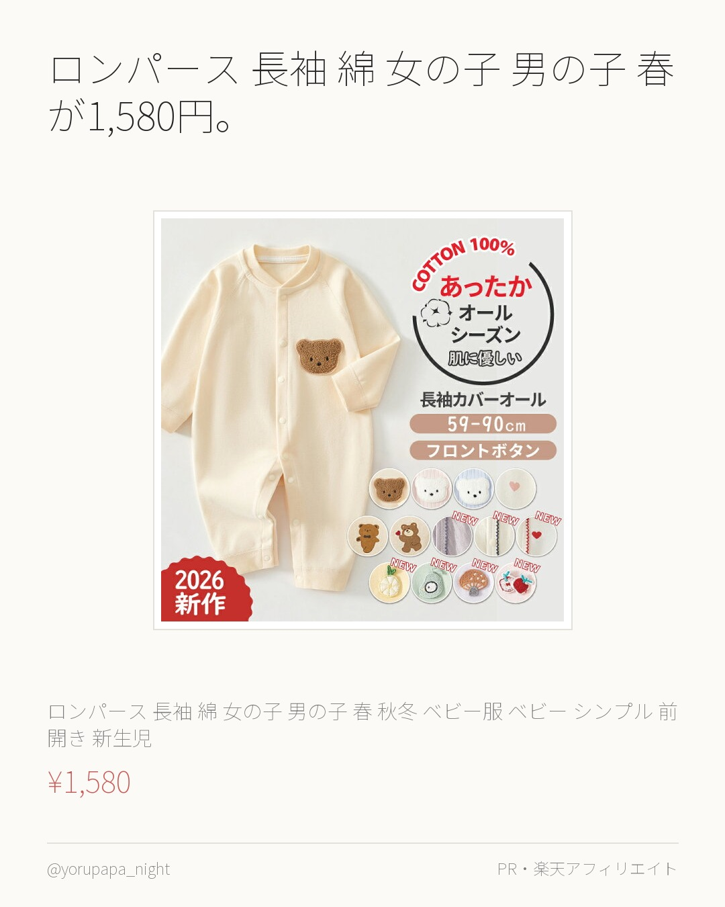
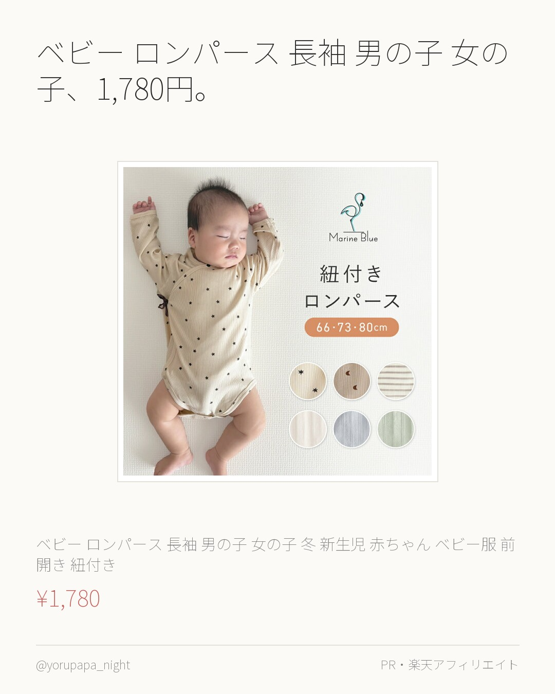
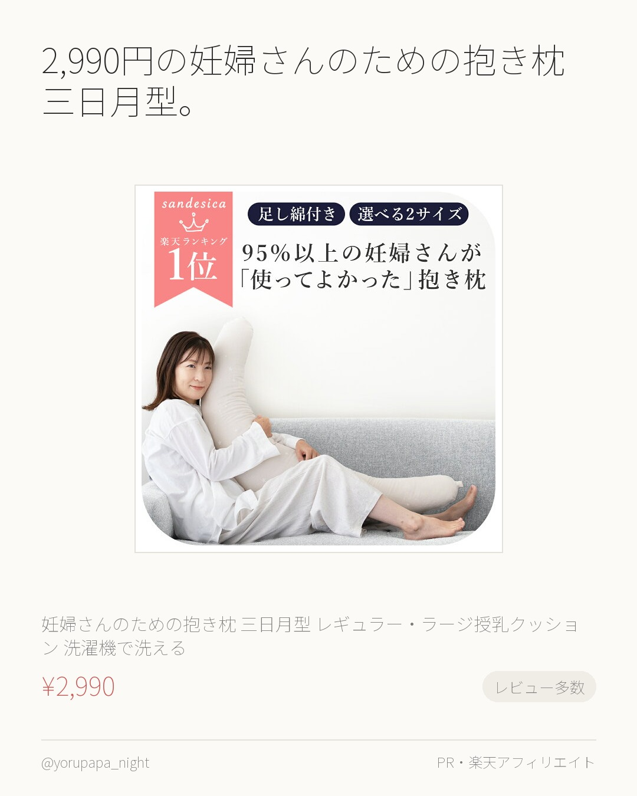
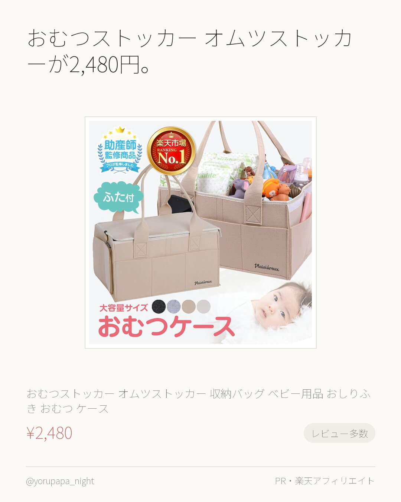
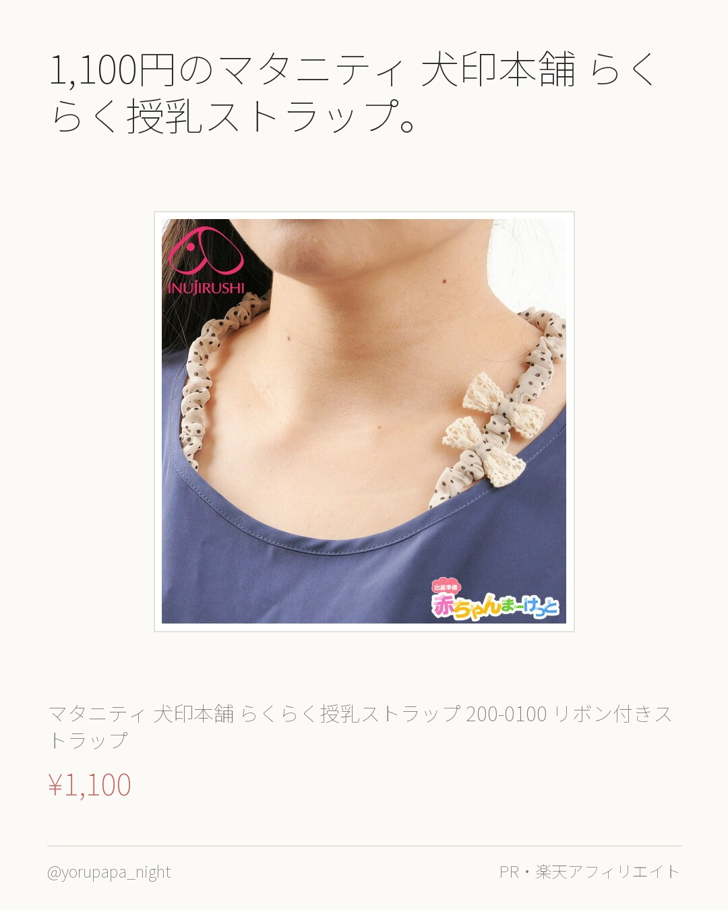
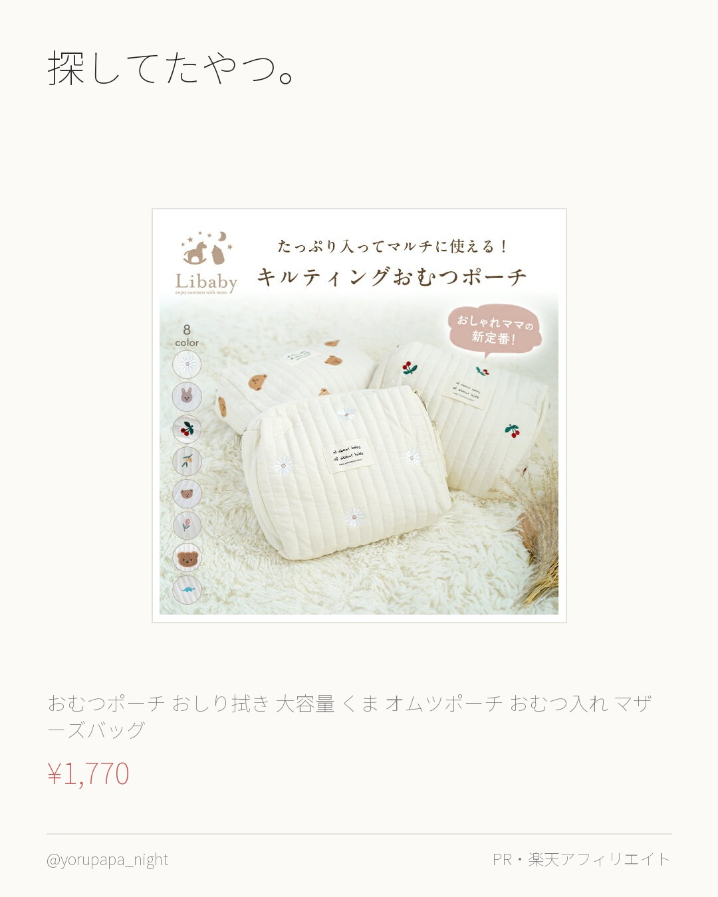
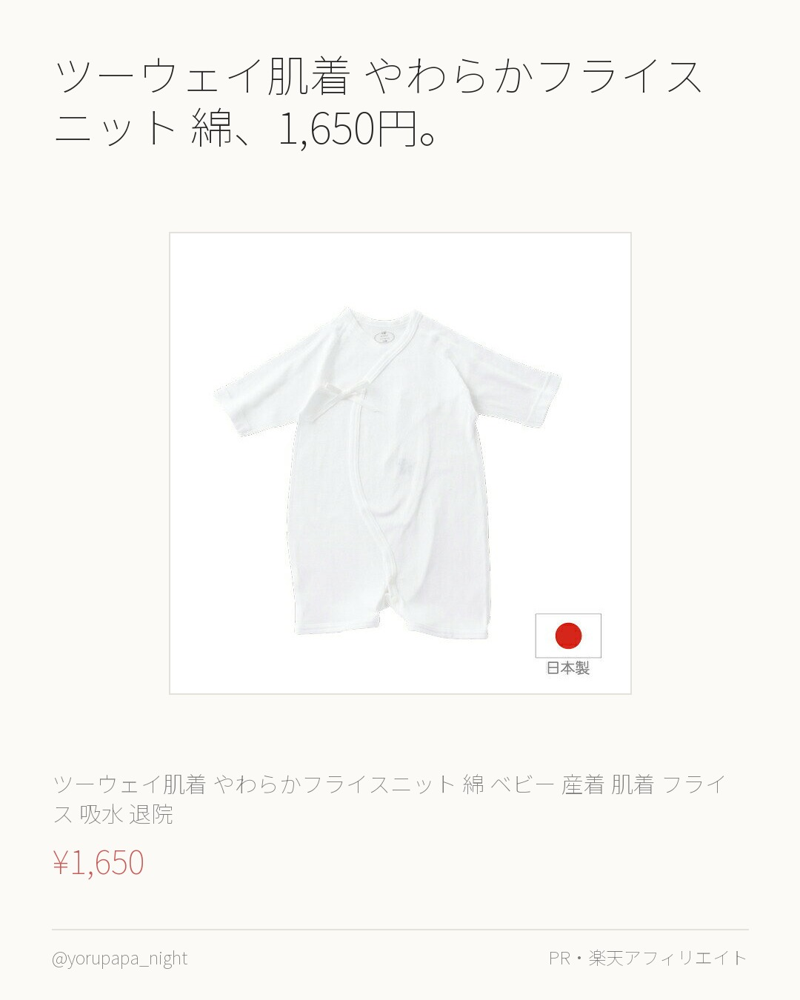
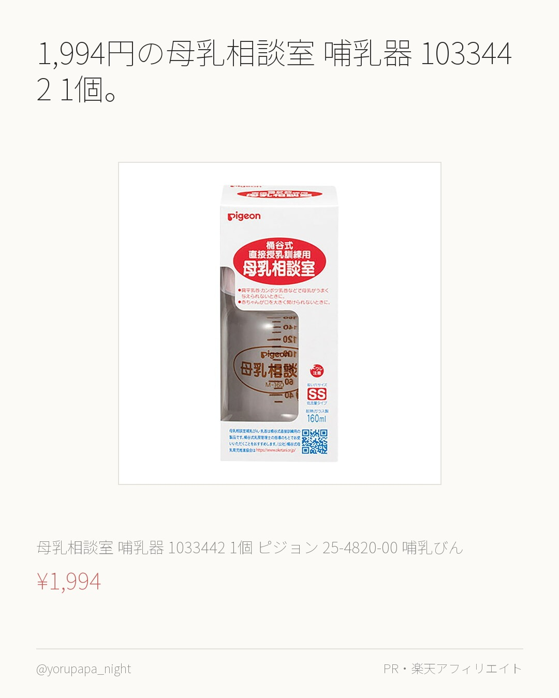
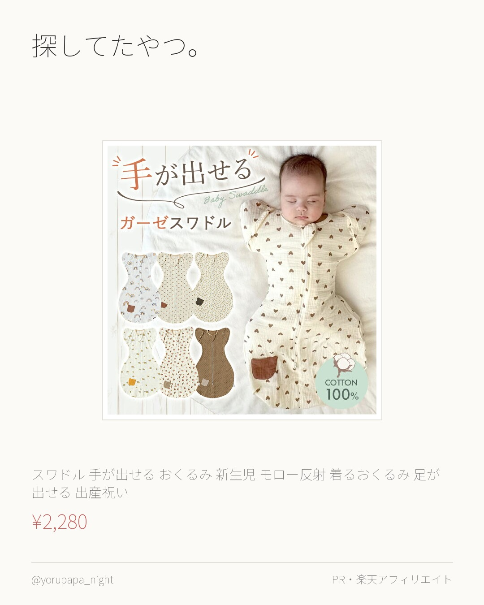
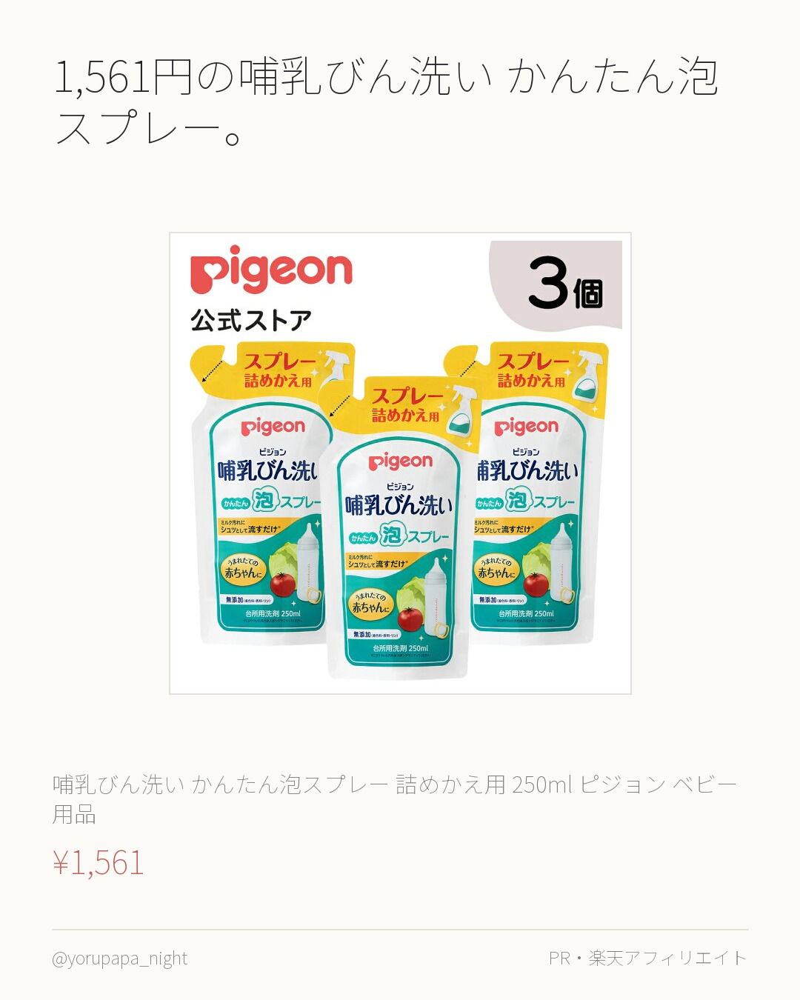

ロンパース 長袖 綿 女の子 男の子 春が1,580円。レビュー4.69（94件）なのが決め手でした。使い回しが効きそう。
【9/11-9/15 期間限定★2点目45%OFFクーポン】ロンパース 長袖 綿100% 女の子 男の子 春 秋冬 ベビー服 ベビー シンプ
¥1,580
楽天市場で見るよるぱぱ｜日中は会社員、夜と休日は育児担当。実際に使ったものだけ。
これまでの投稿をぜんぶ見る → 楽天ROOM／よるぱぱ
ロンパース 長袖 綿 女の子 男の子 春が1,580円。レビュー4.69（94件）なのが決め手でした。使い回しが効きそう。
【9/11-9/15 期間限定★2点目45%OFFクーポン】ロンパース 長袖 綿100% 女の子 男の子 春 秋冬 ベビー服 ベビー シンプ
¥1,580
楽天市場で見る
ベビー ロンパース 長袖 男の子 女の子、1,780円。レビュー4.68（99件）なのが決め手でした。使い回しが効きそう。
ベビー ロンパース 長袖 男の子 女の子 冬 新生児 赤ちゃん ベビー服 前開き 紐付き 紐付きロンパース 秋 子供服 出産祝い ギフト シ
¥1,780
楽天市場で見る
2,990円の妊婦さんのための抱き枕 三日月型。レビュー2,471件で4.4なのが決め手でした。気になってた人はぜひ。
妊婦さんのための抱き枕【日本製】【サンデシカ公式】三日月型 レギュラー・ラージ授乳クッション 洗濯機で洗える だきまくら 洗える 妊娠 抱き
¥2,990
楽天市場で見る
おむつストッカー オムツストッカーが2,480円。レビュー1,018件で4.4なのが決め手でした。気になってた人はぜひ。
【助産師さん監修×ベビモこどもに掲載】＼楽天1位／ おむつストッカー オムツストッカー 収納バッグ ベビー用品 おしりふき おむつ ケース
¥2,480
楽天市場で見る
1,100円のマタニティ 犬印本舗 らくらく授乳ストラップ。レビュー4.47（489件）なのが決め手でした。迷ってるならまずこれから。
【P5倍★9/14 正午まで】【楽天1位!!】マタニティ 犬印本舗 らくらく授乳ストラップ 200-0100 リボン付きストラップ 授乳用
¥1,100
楽天市場で見る
探してたやつ。おむつポーチ おしり拭き 大容量 くま。レビュー4.48（427件）なのが決め手でした。色違いも見てみてください。
【一部商品10％OFF！9/30まで】おむつポーチ おしり拭き 大容量 くま オムツポーチ おむつ入れ マザーズバッグ 赤ちゃんポーチ ハン
¥1,770
楽天市場で見る
ツーウェイ肌着 やわらかフライスニット 綿、1,650円。レビュー4.55（230件）なのが決め手でした。色違いも見てみてください。
【日本製】ツーウェイ肌着 やわらかフライスニット 綿100％ ベビー 産着 肌着 フライス 吸水 退院 出産準備 退院 赤ちゃん ベビー肌着
¥1,650
楽天市場で見る
1,994円の母乳相談室 哺乳器 1033442 1個。レビュー4.75（55件）なのが決め手でした。色違いも見てみてください。
母乳相談室 哺乳器(病産院限定) 1033442 1個 ピジョン 25-4820-00 哺乳びん 赤ちゃん用品 哺乳ビン 乳首 新生児 シリ
¥1,994
楽天市場で見る
探してたやつ。スワドル 手が出せる おくるみ 新生児。レビュー4.5（329件）なのが決め手でした。使い回しが効きそう。
スワドル 手が出せる おくるみ 新生児 モロー反射 着るおくるみ 足が出せる 出産祝い 夜泣き 対策 夜泣き対策 グッズ ベビー 赤ちゃん
¥2,280
楽天市場で見る
1,561円の哺乳びん洗い かんたん泡スプレー。レビュー4.72（64件）なのが決め手でした。気になってた人はぜひ。
【3個セット】哺乳びん洗い かんたん泡スプレー 詰めかえ用 250ml | ピジョン ベビー用品 赤ちゃん用品 赤ちゃんグッズ ベビーグッズ
¥1,561
楽天市場で見る